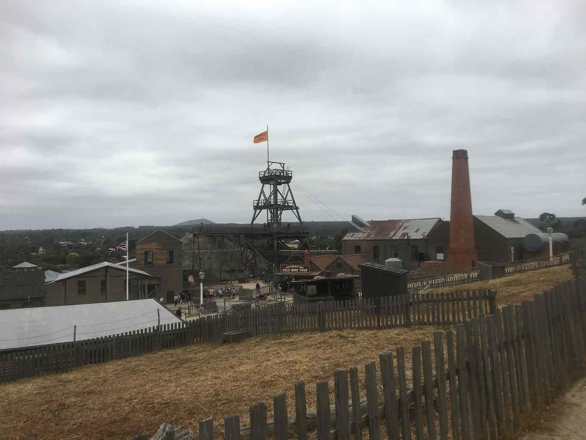
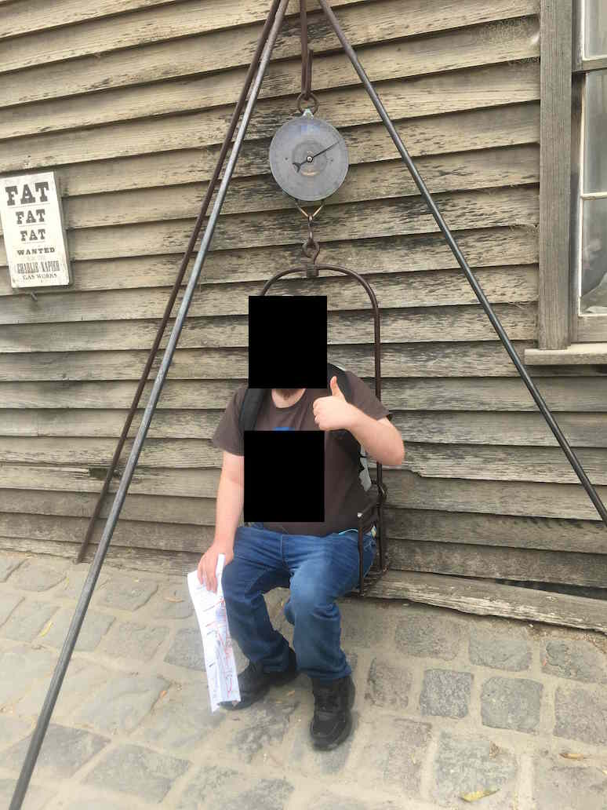
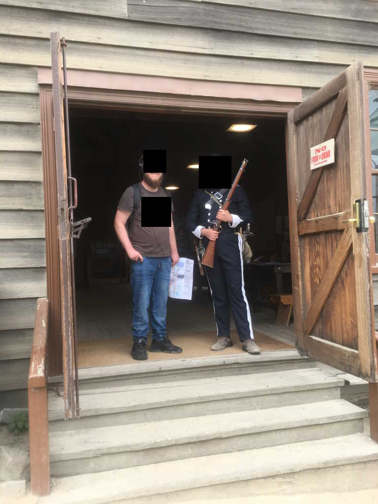
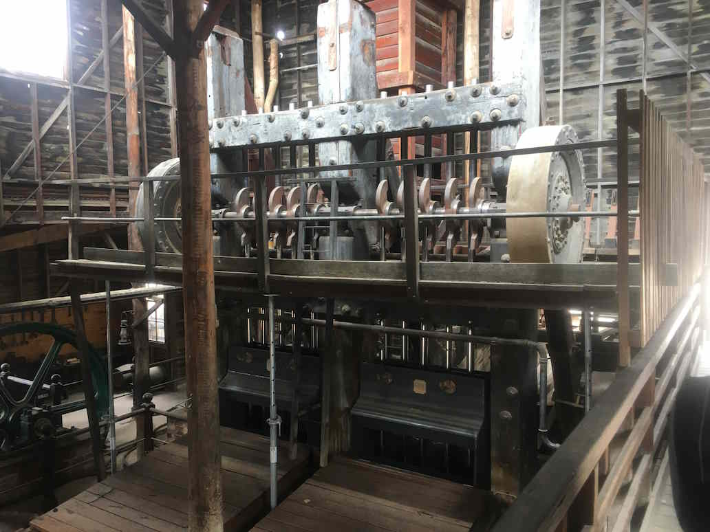
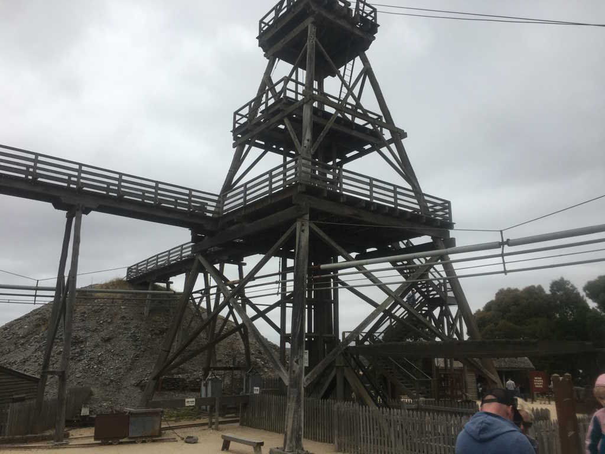
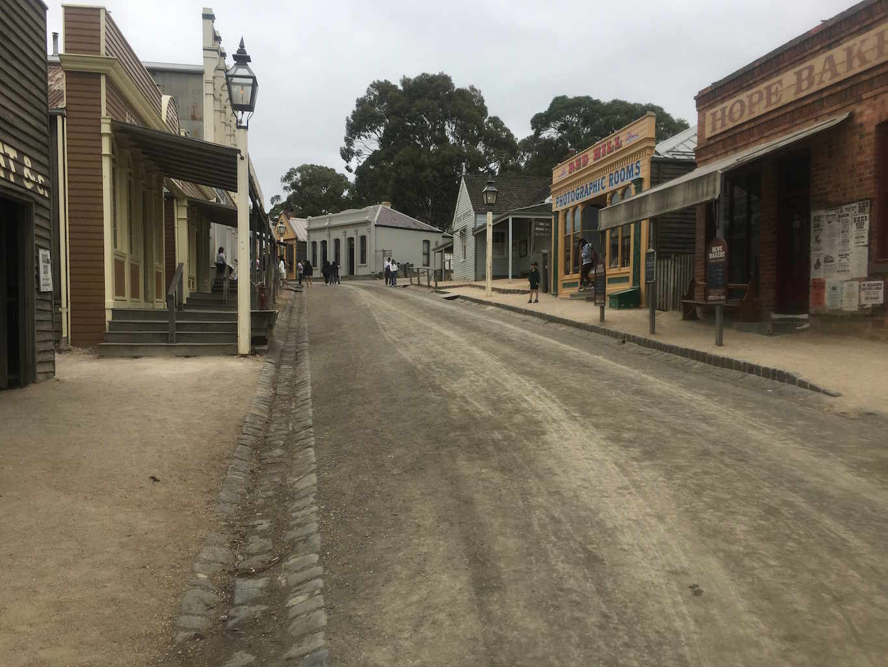
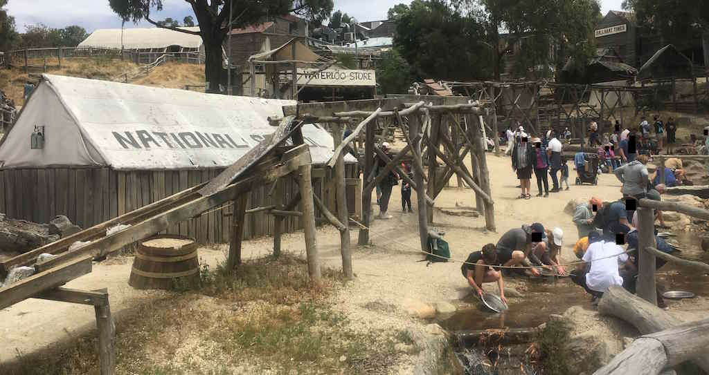
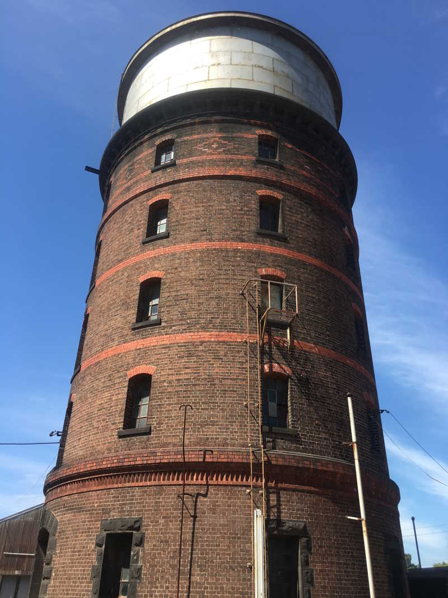
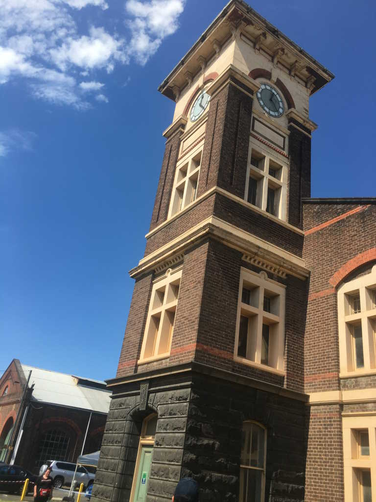
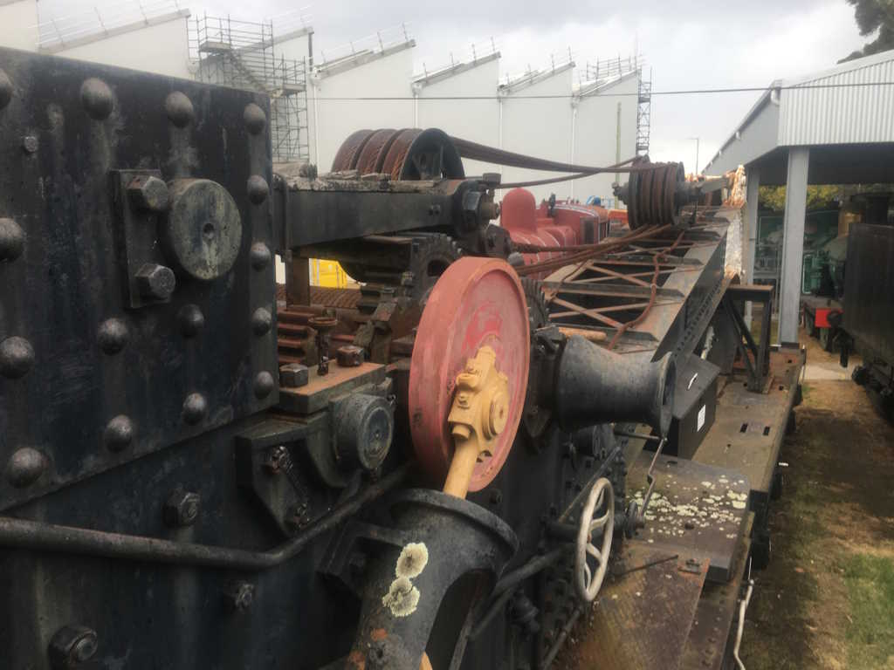

alright this level is mostly based off an area in Ballarat...
it's called Sovereign Hill! Go to it when you feel!



THERES ME!!!

This is a hut i made in highschool, based off a REAL hut in Sovereign Hill!




Oh but the train-yard is base on one in newport.
~100km away,
but i think it fits!



incudes the breakdown train. Sorry to burst your bubble!